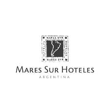
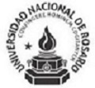

EXPERIENCIA
General Motors
2007 - Actualidad
GM Argentina, Alvear, Santa Fé. Operario de Planta, Finesse, Control de
Calidad.
Desmontaje de estructuras, tareas de mantenimiento en gral.

Mares Sur SA
2005 - 2007
Mares Sur SA, “HotelTunquelén”, Bariloche, Río Negro. Recepcionista. Atención front desk,
reservas, facturación.
BDN Turismo
2003 - 2005
BDN Turismo, “Hotel Piscis” y “Hotel Escorpio”, Las Leñas, Mendoza. Recepcionista. Atención front desk,
reservas, facturación.
Noticias de San Nicolás
1999 - 2002
Periódico Noticias de San Nicolás, San Nicolás de los Arroyos, Buenos Aires. Redactor periodísitico.
EDUCACION
Argentina Programa 2
Febrero 2022 - Actualidad
Segunda Etapa #YoProgramo, Ministerio de Desarrollo Productivo de la Nación.
Instituto Superior Politécnico Córdoba
Marzo 2022 - Actualidad
Tecnicatura en Desarrollo Web y Aplicaciones.
Argentina Programa 1
Abril 2022 - Junio 2022
Primera Etapa #SéProgramar, Ministerio de Desarrollo Productivo de la Nación.

Universidad Nacional de Rosario
1998 - 2002
Licenciatura en Comunicación Social.
Conocimientos en tecnologías
HTML, CSS, Bootstrap, JAVA
Idiomas
Inglés nivel avanzado
¿Cómo me puede contactar?
Celular: (336) 4361009
Correo electrónico:al1819@hotmail.com.ar
LinkedIn:www.linkedin.com/in/alvaro-gorostiza-b16817201
Dirección:14 de Febrero 1819, Villa Constitución, Santa Fé